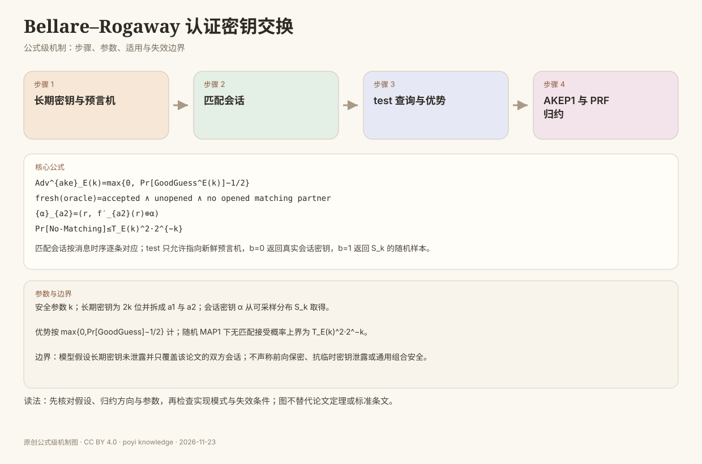
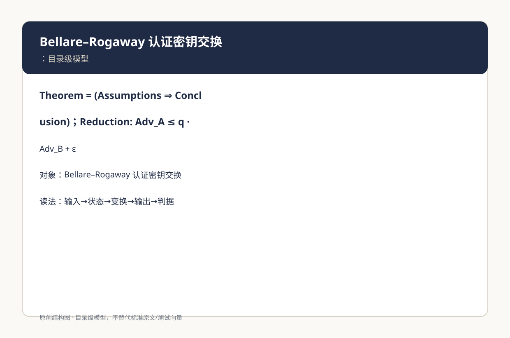

原理与机制
定理：Bellare–Rogaway 认证密钥交换（Bellare–Rogaway Authenticated Key Exchange）。### 参与者、预言机与会话
模型把参与方 i 对 j 的第 s 个会话写成预言机 Π^s_{i,j}。敌手 E 可以调用 send、reveal 与 test 等查询。一次会话的对话是带时序的消息序列；若两个预言机的消息前缀按时间顺序一一对应，则称二者存在匹配会话。### 认证与密钥不可区分
协议 Π 是安全 AKE，需要同时满足：良性敌手下，匹配会话的两个预言机都接受，且 α^s_{i,j}=α^t_{j,i} 按分布 S_k 采样；对任意 PPT 敌手 E，优势
Adv^E(k)=max{0, Pr[GoodGuess^E(k)]−1/2}
敌手选一个新鲜预言机：已接受、未被 reveal，且没有已被 reveal 的匹配伙伴。挑战者掷 b：b=0 返回真实 α，b=1 返回 S_k 的随机样本；E 输出 Guess。GoodGuess 是事件 Guess=b。### AKEP1 构造
共享 2k 位长期密钥分成 a1、a2；a1 驱动 PRF f 做消息认证，a2 驱动 f′ 加密会话密钥：
{α}{a2}=(r, f′{a2}(r)⊕α)。B 从 S_k 选 α，把该密文放进 Text2；MAP2 流程用 f_{a1} 认证。Theorem 5.2 表明 f、f′ 为 PRF 时 AKEP1 是安全 AKE；随机 MAP1 下无匹配接受概率不超过 T_E(k)^2·2^−k。

为什么重要
Bellare–Rogaway 把“双方都接受”和“敌手分不出会话密钥”拆成两个判据。只证明消息认证不够，因为敌手可能让双方接受却仍能区分密钥；只证明密钥不可区分也不够，因为没有匹配会话就无法把密钥归给正确的对端。
应用与实例
1.定义会话：为每个参与方、对端和会话编号建立唯一预言机，避免会话混淆。2.证明认证：先证良性执行正确，再证无匹配会话时接受概率可忽略。3.证明密钥：把 test 查询归约到 PRF 或理想密码假设，明确新鲜性条件。4.分离密钥：认证密钥与加密密钥用不同 PRF 域，如 a1 与 a2。### 不能怎么用
不能把“双方接受”直接当作 AKE 安全；不能在 test 查询后继续 reveal 目标会话；不能把该条目模型当成前向保密或 UC 安全的证明。

边界与攻击面
1.模型边界：长期密钥泄露、临时密钥泄露、前向保密和密钥托管不在该定义中；需要更强模型另行证明。2.会话绑定：匹配会话依赖唯一会话标识与消息时序；协议若允许消息重排、反射或会话混淆，定义本身不能补上身份绑定。3.实现层：PRF 被替换成非域分离的杂凑、随机数复用或状态管理错误，会绕过归约假设。4.过度声明：该论文的双方 AKEP1 不等于所有 AKE 协议；该条目不给实现认证，也不声称覆盖未知密钥共享的全部变体。
历史与背景
论文发表于 CRYPTO '93，会议记录第 232–249 页。它把实体认证与会话密钥分发放在同一个安全游戏里，给出匹配会话、新鲜性和 test 优势的形式定义，并用 PRF 构造 AKEP1。
技术参数与复算边界
该条目的形式模型是 (\Pr[\mathrm{Bad}_A(\lambda)]\le \varepsilon(\lambda))。输入：输入：Bellare–Rogaway 认证密钥交换的公开参数、密钥/随机数与消息；变量说明：Bad 为归约中定义的失败事件，ε 为可忽略函数。 预期输出：按 Bellare–Rogaway 认证密钥交换 的规范执行后得到可验证的输出或可比较的优势界。 复算必须给出输入、步骤、输出和单位；示例只演示流程，不替代标准测试向量。
复杂度由密钥长度、分组/状态规模、轮数、随机数质量和敌手模型共同决定；参数越界、版本差异与实现侧信道都可能使公式结论失效。已登记限制：该条目只给出形式模型与可复算步骤，不声称已完成生产实现、侧信道认证或第三方安全评估。
逐步示例与核验
形式模型与复算步骤
[\Pr[\mathrm{Bad}_A(\lambda)]\le \varepsilon(\lambda)]
Bellare–Rogaway 认证密钥交换的公开参数、密钥/随机数与消息；变量说明：Bad 为归约中定义的失败事件，ε 为可忽略函数。1.定义失败事件。2.构造归约把攻击者转成困难问题求解器。3.证明失败概率上界。边界：公式只覆盖已登记的参数与假设；参数取值、标准版本和实现细节仍以来源为准。
参考出处
- Wikipedia search entry for Bellare–Rogaway 认证密钥交换. https://zh.wikipedia.org/w/index.php?search=Bellare%E2%80%93Rogaway%20%E8%AE%A4%E8%AF%81%E5%AF%86%E9%92%A5%E4%BA%A4%E6%8D%A2
- Handbook of Applied Cryptography (Menezes, van Oorschot, Vanstone). https://www.cacr.math.uwaterloo.ca/hac/